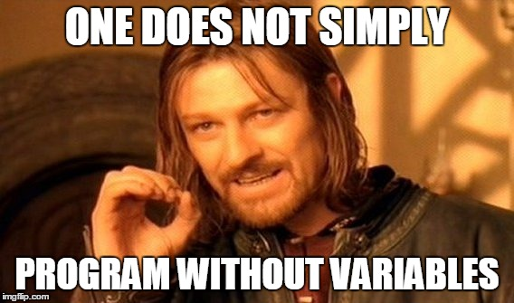
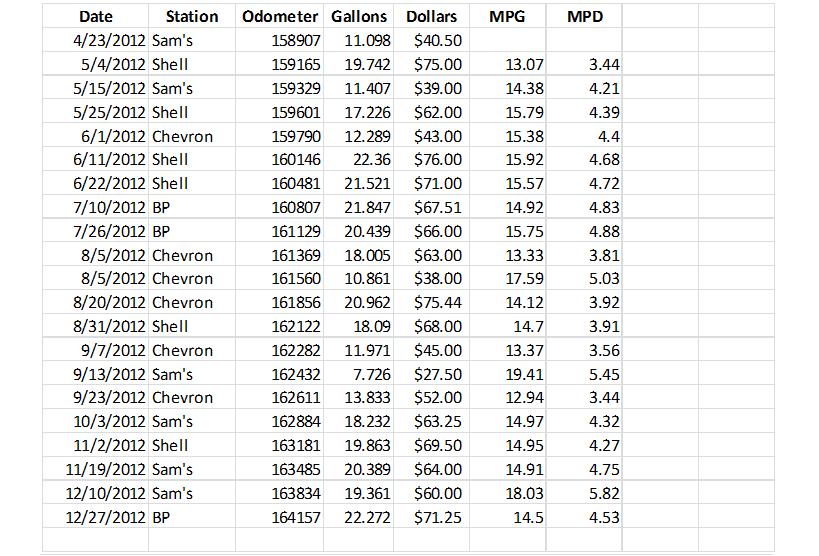
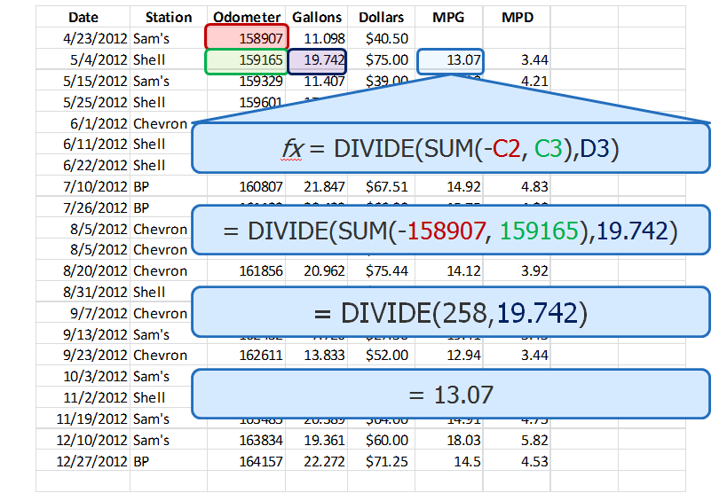

The Renaissance of Functional Programming
Joe Barnes
Follow along at http://localhost
Powered by
- Trends in computing technology
- How is functional programming different?
- How do I apply functional programming?
- What functional programming improves
So what's going on in computing these days?
Moore's law is the observation that, over the history of computing hardware, the speed of integrated circuits doubles approximately every two years.
Moore's law is the observation that, over the history of computing hardware, the
speed of
number of transistors on
integrated circuits doubles approximately every two years.
That has mostly continued, but the speed up is over.

"The free lunch is over!!!"
-Some C/C++ guy named Herb Sutter
More cores, not more speed
“C++ has been designed for single thread programming, and parallel programming requires a revolutionary rather than evolutionary change.
Two words: data races.”
-Bartosz Milewski (another C++ guy, who happens to look like Tony Iommi)
“The programmer must ensure read and write access to objects is properly coordinated (or "synchronized") between threads.”
-Java Concurrency | Wikipedia
The developer bears the cognitive load of solving the business problem and juggling shared mutable state.
A data race occurs when two concurrent threads access a shared variable and when
- at least one access is a write and
- the threads use no explicit mechanism to prevent the accesses from being simultaneous.
Recipe
Recipe
- Two concurrent threads → Here to stay
Recipe
- Mechanism not used → Programmer error, also here to stay
Recipe
- At least one write → Well there's an idea...
Revoking powers/freedoms is not a new thing in software.
1968 – Structured Programming
- Edsger Dijkstra writes Go To Statement Considered Harmful
- Revoked the goto
1966 – Object Oriented Programming
- Ole-Johan Dahl and Kristen Nygaard create Simula 67
- Revoked the need for function pointers
- Modern OO constrains visibility/scope
1957 – Functional Programming
- John McCarthy creates Lisp based on Alonzo Church's Lambda Calculus circa 1930's
- Revokes re-assignments and mutation (well, it never had them in the first place)

In fact, I bet you've written something like this before...
$ find . -name *.java | xargs grep -l "function" | wc –l
# A function returning a list of strings
# A function filtering a list of strings
# A function that returns the size of a list
Even managers can do it.


An expression is said to be referentially transparent if it can be replaced with its value without changing the behavior of a program
(in other words, yielding a program that has the same effects and output on the same input).
-Somebody smart on Wikipedia
By giving ourselves a constraint, we gain a new power